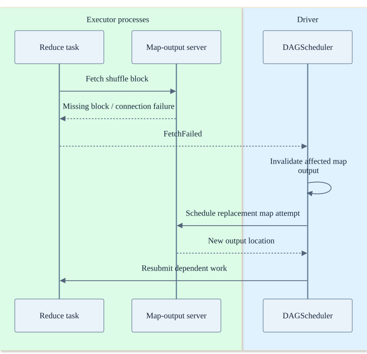

Chapter 10 · source-backed walkthrough
Spark: scheduling, shuffle and retries
Spark provides the distributed envelope for batch SQL, Structured Streaming micro-batches and Comet native tasks. The driver coordinates stages and tasks; executors exchange shuffle data and access storage directly.
Before the detail
The mental model
The driver schedules attempts. Executors run them and exchange shuffle blocks. Lost intermediate work can be recomputed from the upstream plan.
Worked example: connect the system view to the code
Map tasks on E1 and E2 feed a reduce task on E3. If E2 loses required local shuffle blocks, retrying only the reducer may be insufficient: Spark must regenerate the missing map output before the reduce can finish.
- Launch a task
CoarseGrainedSchedulerBackend sends work to an executor.
- Read shuffle blocks
ShuffleBlockFetcherIterator retrieves upstream outputs.
- Handle lost work
DAGScheduler handles failures and resubmission.
Illustrative reasoning example using this chapter's source scope; not a recorded deployment or executed experiment.
Can retry or speculation run my side-effecting function twice?
Yes. A destination needs attempt-safe commit or idempotency; task scheduling does not undo an external action.
Choose a reading path · Terms and progress boundaries · Clarity review
01
Driver, executors and cluster manager
A cluster manager allocates executor processes. The Spark driver owns the application, DAG scheduling and task scheduling. DAGScheduler identifies stage boundaries; TaskSchedulerImpl and the scheduler backend place task attempts on executors. CoarseGrainedExecutorBackend registers and accepts LaunchTask messages.
NettyRpcEnv carries control messages such as task launch, heartbeat-related coordination and status. Shuffle data uses a block-transfer path, not the driver as a data relay. Executors hold cached blocks and local shuffle output; an external shuffle service or another shuffle mechanism changes how long that output survives executor loss.
Driver control and executor data paths
Comet, when enabled, runs inside an executor task. It does not introduce a separate native cluster scheduler.

02
Shuffle failure and stage recomputation
A reduce task requests the map output locations and fetches blocks. Fetch failure can mean the relevant data has disappeared or its server is unreachable. DAGScheduler handles FetchFailed, invalidates the affected output metadata and resubmits work according to its recovery strategy.
A transient task failure can be retried as a new attempt. Lost shuffle output can require recomputing an upstream map stage and then downstream tasks. This replay is safe for pure deterministic computation; arbitrary external side effects inside map tasks require a separate commit / idempotency protocol.
Speculative execution can run another attempt of a slow task. Therefore the destination must not assume only one physical attempt ever executes an input partition. Scheduler task success and destination exactly-once business effects are different contracts.
A missing shuffle block causes re-execution
This is a simplified classic shuffle failure path. Newer shuffle modes can alter the retry scope.

| Design choice | Throughput benefit | Latency / resilience cost |
|---|---|---|
| Larger shuffle partitions | Less scheduling and metadata overhead | Longer tasks, larger skew outliers and larger replay units. |
| More partitions | More parallelism and smaller task units | More task launch, shuffle metadata and tiny-block overhead. |
| Broadcast join | Avoid large repartition of the probe side | Replicate build-side memory to executors; driver / network pressure. |
| External or durable shuffle storage | Preserve outputs across some executor losses | Extra service / storage management and network cost. |
| Speculation | Reduce straggler impact | Duplicate compute and a stronger need for attempt-safe output commit. |
Inside the implementation
These excerpts come directly from the code paths used above. Expand a component to move from the system view into its implementation.
spark-launch CoarseGrainedSchedulerBackend.scala:457
Driver serializes task descriptions and sends LaunchTask to executor endpoints.
spark/core/src/main/scala/org/apache/spark/scheduler/cluster/CoarseGrainedSchedulerBackend.scala · f9358a5587a2
456 // Launch tasks returned by a set of resource offers
457 private def launchTasks(tasks: Seq[Seq[TaskDescription]]): Unit = {
458 for (task <- tasks.flatten) {
459 val serializedTask = TaskDescription.encode(task)
460 if (serializedTask.limit() >= maxRpcMessageSize) {
461 Option(scheduler.taskIdToTaskSetManager.get(task.taskId)).foreach { taskSetMgr =>
462 try {
463 var msg = "Serialized task %s:%d was %d bytes, which exceeds max allowed: " +
464 s"${RPC_MESSAGE_MAX_SIZE.key} (%d bytes). Consider increasing " +
465 s"${RPC_MESSAGE_MAX_SIZE.key} or using broadcast variables for large values."
466 msg = msg.format(task.taskId, task.index, serializedTask.limit(), maxRpcMessageSize)
467 taskSetMgr.abort(msg)
468 } catch {
469 case e: Exception => logError("Exception in error callback", e)
470 }spark-executor CoarseGrainedExecutorBackend.scala:181
Executor receives the RPC and launches task execution.
spark/core/src/main/scala/org/apache/spark/executor/CoarseGrainedExecutorBackend.scala · f9358a5587a2
180
181 case LaunchTask(data) =>
182 if (executor == null) {
183 exitExecutor(1, "Received LaunchTask command but executor was null")
184 } else {
185 val taskDesc = TaskDescription.decode(data.value)
186 logInfo(log"Got assigned task ${MDC(LogKeys.TASK_ID, taskDesc.taskId)}")
187 executor.launchTask(this, taskDesc)
188 }
189
190 case KillTask(taskId, _, interruptThread, reason) =>
191 if (executor == null) {
192 exitExecutor(1, "Received KillTask command but executor was null")
193 } else {
194 executor.killTask(taskId, interruptThread, reason)spark-shuffle ShuffleBlockFetcherIterator.scala:86
Reducers fetch local or remote shuffle blocks.
spark/core/src/main/scala/org/apache/spark/storage/ShuffleBlockFetcherIterator.scala · f9358a5587a2
85 private[spark]
86 final class ShuffleBlockFetcherIterator(
87 context: TaskContext,
88 shuffleClient: BlockStoreClient,
89 blockManager: BlockManager,
90 mapOutputTracker: MapOutputTracker,
91 blocksByAddress: Iterator[(BlockManagerId, collection.Seq[(BlockId, Long, Int)])],
92 streamWrapper: (BlockId, InputStream) => InputStream,
93 maxBytesInFlight: Long,
94 maxReqsInFlight: Int,
95 maxBlocksInFlightPerAddress: Int,
96 val maxReqSizeShuffleToMem: Long,
97 maxAttemptsOnNettyOOM: Int,
98 detectCorrupt: Boolean,
99 detectCorruptUseExtraMemory: Boolean,comet-create CometExecIterator.scala:125
Native plan, memory, task identity and runtime inputs cross JNI.
datafusion-comet/spark/src/main/scala/org/apache/comet/CometExecIterator.scala · 1628c520096e
124
125 val createdPlan = nativeLib.createPlan(
126 id,
127 inputObjects,
128 protobufQueryPlan,
129 protobufSparkConfigs,
130 numParts,
131 nativeMetrics,
132 metricsUpdateInterval = COMET_METRICS_UPDATE_INTERVAL.get(),
133 cometTaskMemoryManager,
134 localDiskDirs,
135 batchSize = COMET_BATCH_SIZE.get(),
136 memoryConfig.offHeapMode,
137 memoryConfig.memoryPoolType,
138 memoryConfig.memoryLimit,Test source inspected or located, not executed: CometExecIteratorLifecycleSuite.scala
spark-retry DAGScheduler.scala:3886
Lost shuffle data triggers scheduler failure handling and stage re-execution.
spark/core/src/main/scala/org/apache/spark/scheduler/DAGScheduler.scala · f9358a5587a2
3885
3886 case FetchFailed(bmAddress, shuffleId, _, mapIndex, reduceId, failureMessage) =>
3887 val failedStage = stageIdToStage(task.stageId)
3888 val mapStage = shuffleIdToMapStage(shuffleId)
3889
3890 if (failedStage.latestInfo.attemptNumber() != task.stageAttemptId) {
3891 logInfo(log"Ignoring fetch failure from " +
3892 log"${MDC(TASK_ID, task)} as it's from " +
3893 log"${MDC(FAILED_STAGE, failedStage)} attempt " +
3894 log"${MDC(STAGE_ATTEMPT_ID, task.stageAttemptId)} and there is a more recent attempt for " +
3895 log"that stage (attempt " +
3896 log"${MDC(NUM_ATTEMPT, failedStage.latestInfo.attemptNumber())}) running")
3897 } else if (activeJobForStage(failedStage).flatMap(jobIdToActiveJob.get)
3898 .exists(_.hasPipelinedDependency) &&
3899 (isPipelinedGroupMember(failedStage) || isPipelinedGroupMember(mapStage))) {